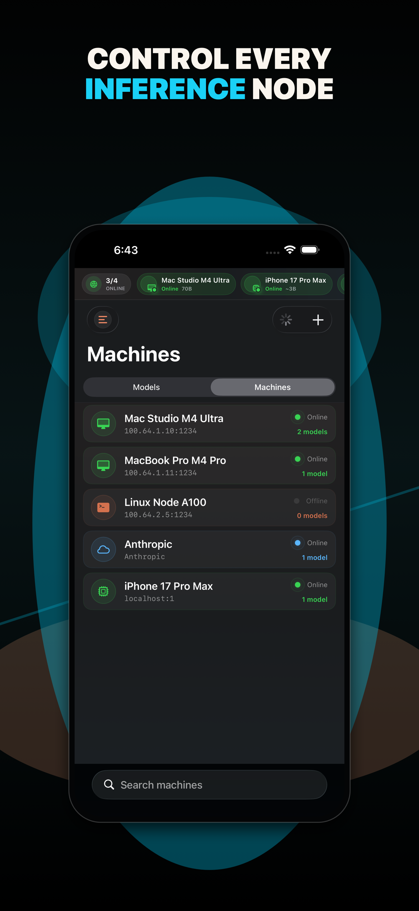
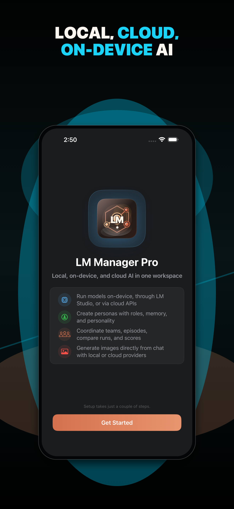
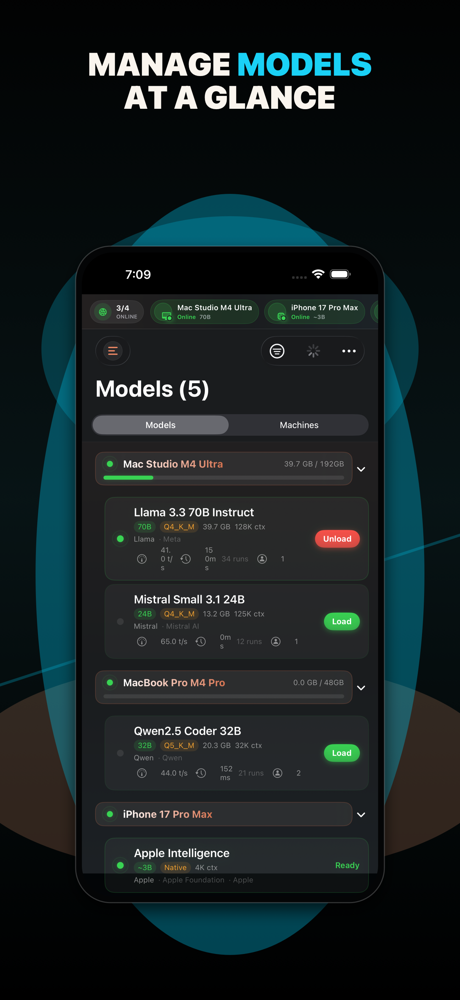
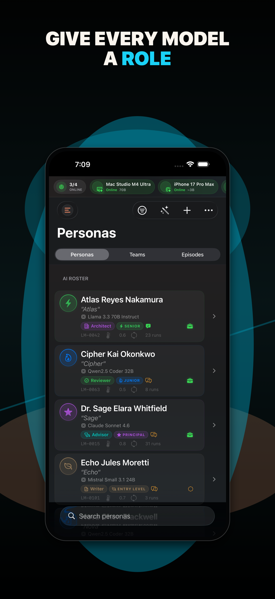
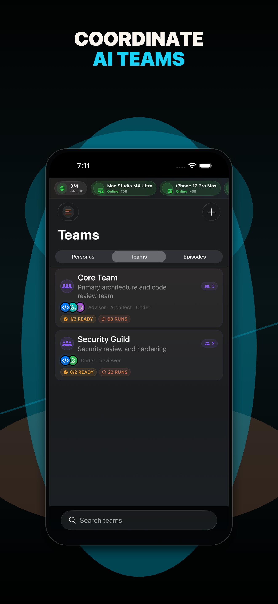
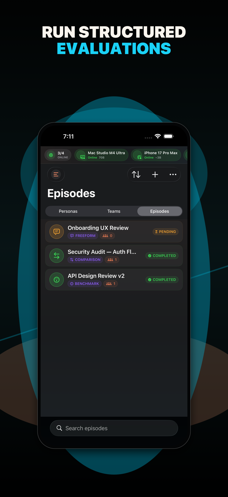
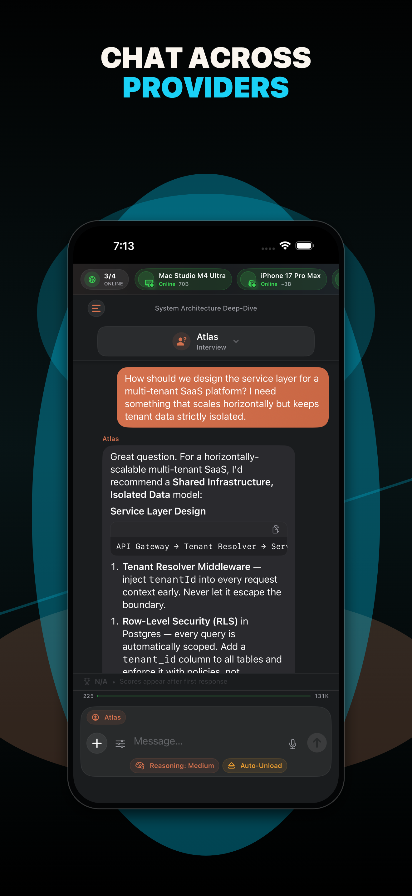
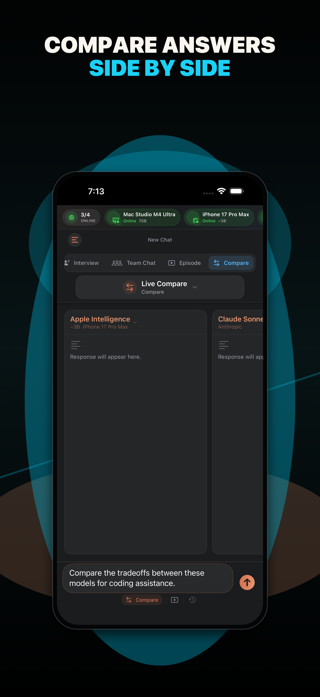
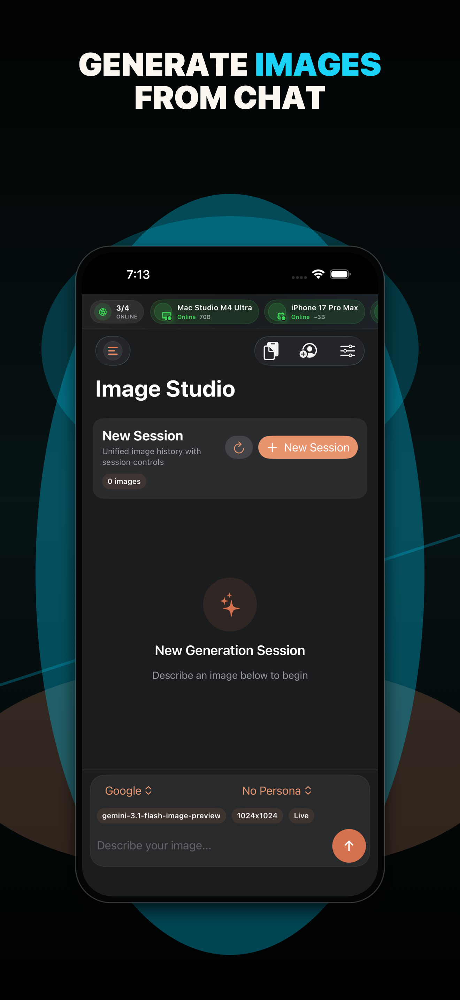
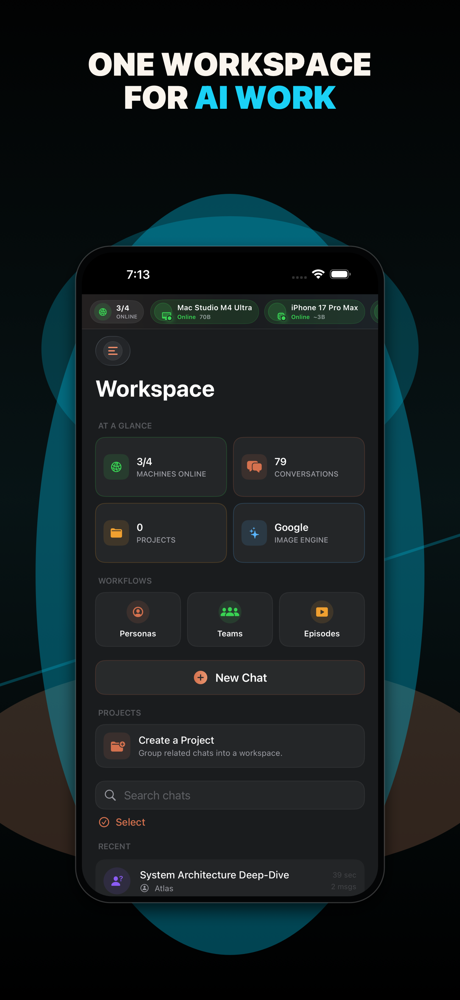

Manage every server at a glance.
Add Mac Minis, workstations, or Tailscale peers as inference nodes. See loaded models, network health, and VRAM usage without switching tools.
Connect LM Studio servers and top cloud AI providers. Run persona teams, benchmark with structured episodes, and track model performance.

LM Manager Pro is a native iOS and iPadOS app for developers and AI enthusiasts who run their own language model infrastructure. It keeps local nodes, cloud providers, personas, episodes, comparisons, and performance history close together.
Add Mac Minis, workstations, or Tailscale peers as inference nodes. See loaded models, network health, and VRAM usage without switching tools.
Give each model a name, role, personality overlay, and custom system prompt. Assign local and cloud models to the work they do best.
Run multi-step prompt scripts with pause points and archived history, then compare results across models, teams, and sessions.
Run the same prompt across two to four models in parallel with live TPS, TTFT, token count, and completion time.
Browse a chronological feed of AI responses across sessions, sorted by newest, fastest TPS, most tokens, or session type.
No accounts, no analytics, and no telemetry. Export your full dataset as JSON for backup or migration when you need it.
Current App Store marketing screenshots from the latest LM Manager Pro build.









Browse requests, report bugs, and keep privacy details one click away.